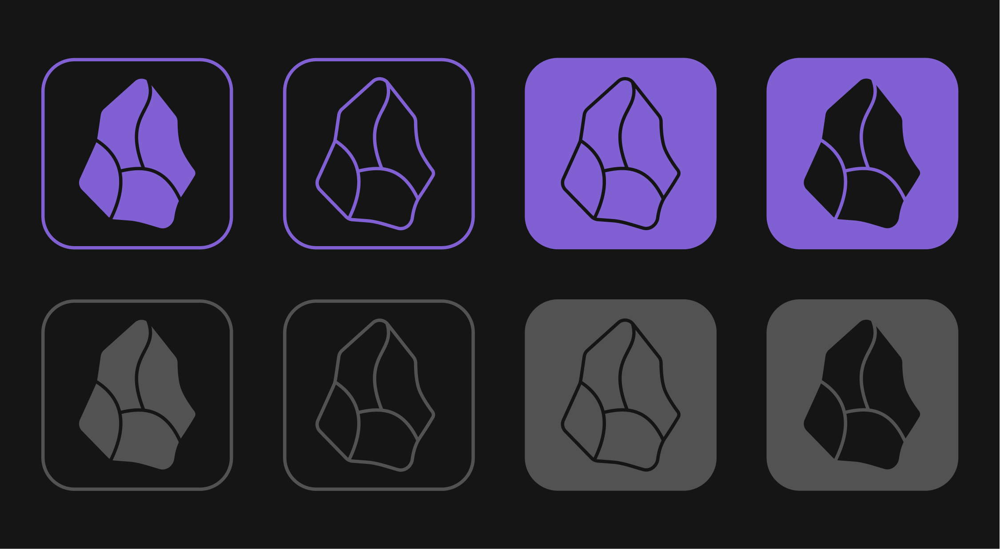

Since we started three years ago, we’ve built Obsidian on core principles that continue to motivate everything we do.
We’ve been encouraged to see that these principles are resonating. Obsidian is rounding the corner on 1,000 community plugins, 100,000 Discord members, and 1 million downloads on our latest release!
As we celebrate this milestone, we’re thrilled to introduce a new logo and app icon that reflects Obsidian’s values, and can continue to inspire the community going forward.
Say hello to the new Obsidian app icon:
To make something that lasts, look to the past
The new Obsidian icon is inspired by its namesake, the volcanic rock which has been used since the dawn of humanity to make arrowheads, scrapers, knives, and other tools.
We want to make it possible for your digital notes to be preserved for generations to come. While we can’t predict how computers and digital information will evolve in the future, the new icon is a reminder that we can look to the past for inspiration.
Obsidian notes are stored in simple, plain text files, which have been in use since the dawn of computing. If you want your writing to still be readable on a computer from the 2060s or 2160s, we think it’s important that your Obsidian notes can be read on a computer from the 1960s.

The new logo is designed to remain legible when reduced to single color applications — because it too should have looked groovy in the 60s.
Sharpen your thinking
Extending the metaphor of obsidian tools, our ambition is for Obsidian to be the tool that helps you think more clearly. As a material, obsidian is shaped using a technique called knapping, chipping off flakes of rock to create sharp edges.
Obsidian aims to help you hone your thoughts and refine your ideas with precision. The new icon represents a practical, user-friendly tool that helps you cut through the clutter and carve out clear ideas.
You shape your tools, and they shape you
We believe that Obsidian should adapt to your way of thinking, not the other way around. That’s why we focus on making Obsidian highly customizable and extensible, so you can shape it to your unique needs.
Like the app itself, the new Obsidian icon is malleable. It can be personalized to reflect your favorite color scheme. With our customizable vector files, you can tailor the Obsidian icon to your liking. Give it a try!
Our new icon and branding was created internally. Thank you to everyone who provided feedback along the way!
You will see the new icon by downloading the latest version of Obsidian. We’ve also polished the website, and added two new sections, the Blog and Changelog.